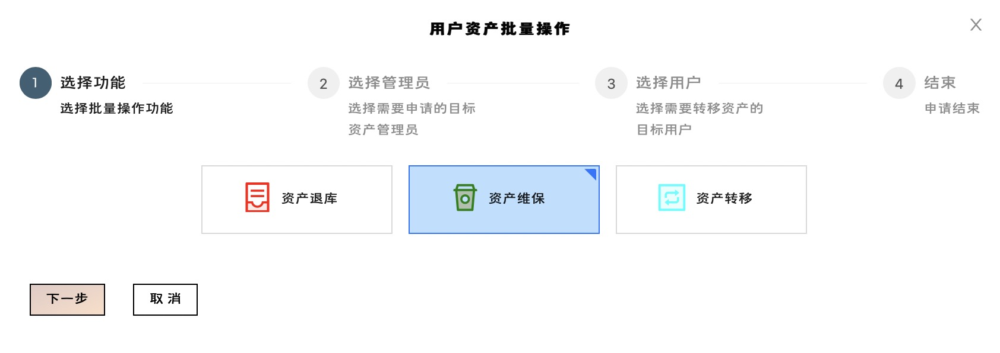
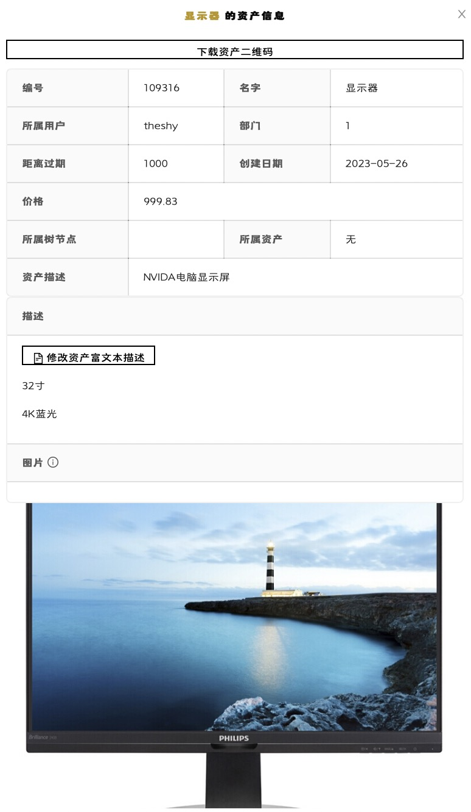
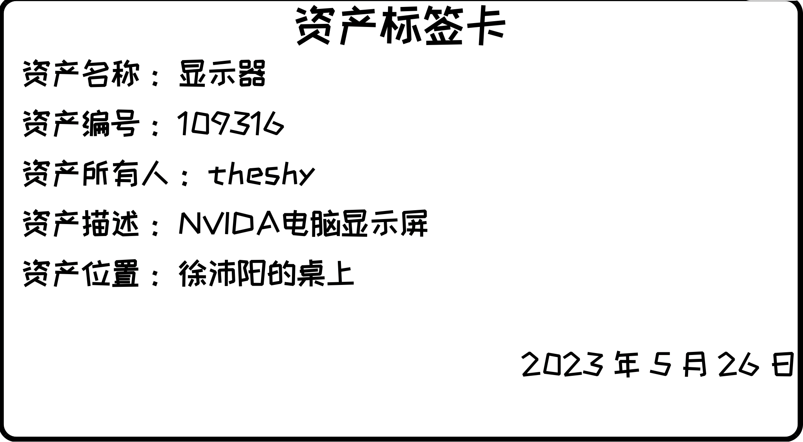
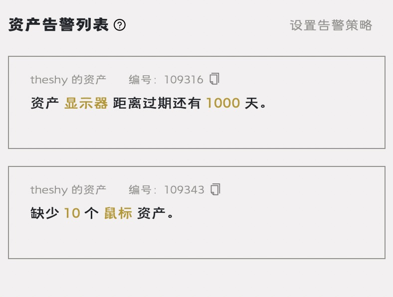
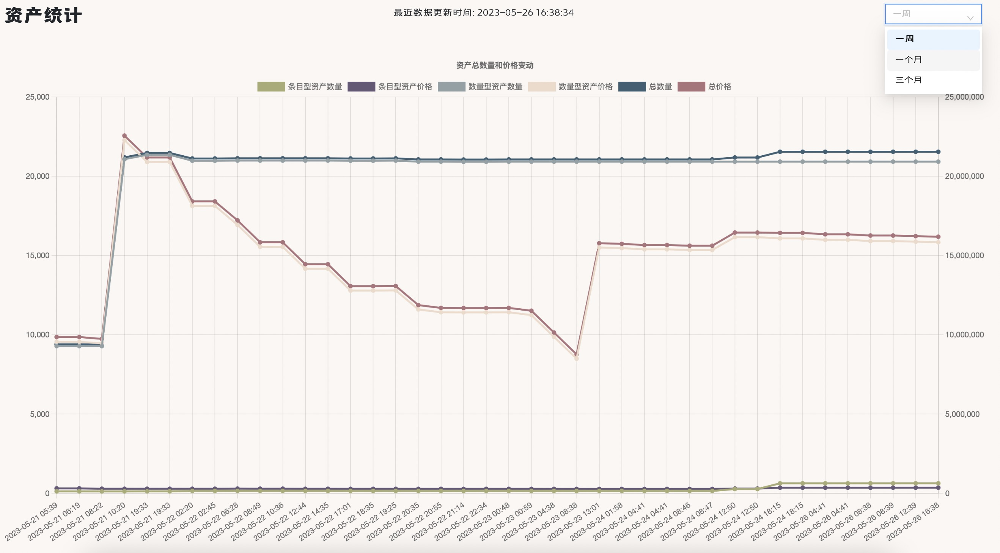
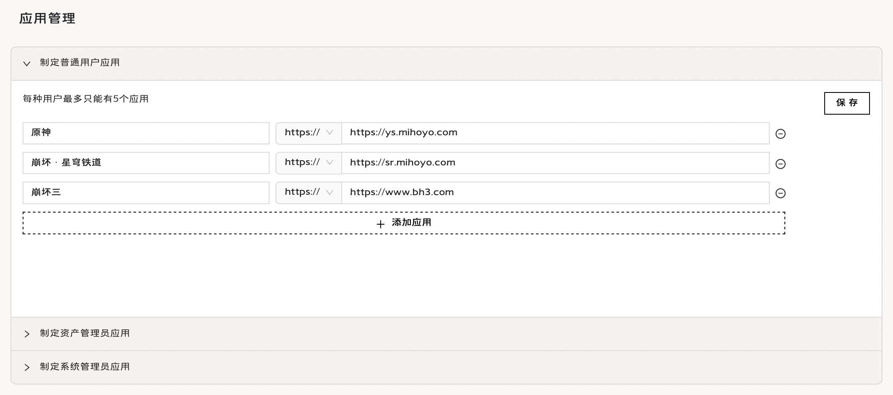
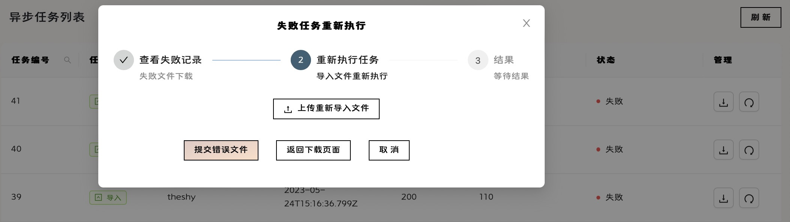

用户使用指南
用户使用指南
感谢您使用启源资产管理系统！
本平台地址：启源|资产管理系统
登录
用户不需要也不必进行注册，进入企业时自动由所属企业的系统管理员完成账户创建，并将账户告知用户，用户用初始密码登录后可以修改密码，但不能修改用户名，类似清华账户的效果。此外，绑定邮箱功能并没有实质用途，用户可自行设置。
用户也能通过飞书登录系统，如果企业绑定了飞书，使用飞书登录后用户能够在数据库中自动创建；普通用户也能够绑定飞书账号，便于使用飞书登录。
锁定与解锁
超级管理员以及系统管理员能够锁定与解锁用户，锁定后用户无法登录，且如果已经登录则无法进行任何操作，用户头像会有红点提示，代表用户已被锁定，正常情况下为绿点。
资产管理
资产管理是资产管理系统至关重要的一环。
资产创建获取
资产入库
只有资产管理员可以创建库中没有的资产，在资产界面点击相应按钮，支持通过手动录入进行创建，以及通过符合 Excel 模板的文件进行批量导入，仅在 Excel 导入时创建异步任务执行，如需查看异步任务执行情况，请联系企业系统管理员。
资产领用
所有未被锁定的用户均可以在领用资产界面查看该部门资产管理员名下的闲置资产，通过选择进行批量领用。领用需要经过资产管理员逐条审批，审批通过后资产即到达用户名下，进入使用中状态。
资产批量操作

资产退库
如果资产不需要使用，可以在我的资产页面选定自己使用中的资产，通过点击批量操作按钮选择退库功能，并选定目标资产管理员发起审批，审批通过后资产返回管理员名下，进入闲置状态。
资产维保
如果资产发生损坏，可以联系资产管理员进行维保，通过点击批量操作选择维保功能，并选定目标资产管理员发起审批，审批通过后资产返回管理员名下，进入维保状态。
资产转移
如果资产需要进行转移，可以通过点击批量操作功能，选定目标资产管理员及目标用户发起审批，审批通过后资产转移至新的部门及用户名下，再次进入使用中状态。
资产清退
仅有资产管理员能够进行资产清退操作，清退后的资产价值清零，无法再次进行任何操作，用户无法查看也无法选择自己已经清退的资产。如果用户有资产需要进行报废处理，请先执行退库操作，由资产管理员进行清退。
资产个性化管理
资产信息
资产管理员以及用户均能够在资产操作栏中点击相应按钮查看资产详细信息，其中资产管理员能够支持下载资产信息二维码，能够通过移动端设备扫描后查看资产详细信息。资产管理员同样能够通过查看资产信息页面进行资产富文本编辑，并在富文本中添加图片链接进行定义，以便进行多角度多方位信息标识。

资产管理员同样能够在主页头像下方设计资产标签卡片用于打印，标签卡的标题，每一个子标题都支持自行定义，造就个性化的资产管理方式，在相应资产的资产操作栏即可获取标签卡片的 PDF 文件。注意资产标签卡片的定义不能也不必持久化存储，在退出后再次登陆需要重新定义，当然我们也提供了默认的资产标签卡片以供使用。

资产告警
资产管理员能够在主页设置个性化的告警策略，针对部门内资产的数量或到期时间进行告警，设置策略后，用户能够在主页一栏中查看自己进入告警状态的资产，以便指导进行个性化资产操作；资产管理员能够查看部门内的资产告警名单，协助进行管理协调。

资产统计
资产管理员能够通过主页资产统计入口查看本部门资产的价值变化曲线及各状态资产数量分布饼图，有助于全方位多层次了解部门资产状况，有助于为资产管理提出合理化指导性建议。


人事管理
资产管理系统基于企业，需要必要的企业人事管理。
用户管理
企业系统管理员不属于任何部门，负责创建部门以及部门中的用户。用户创建只能在部门操作栏中进行，同时支持改名，转移部门，删除操作。部门的删除和转移仅对没有用户的部门生效。
在部门列表界面，通过点击某一个部门栏能够查看其子部门，通过点击列表上方面包屑导航栏中某一级即可返回该层级，操作简便直观。
应用配置
企业各级用户在使用本资产管理系统之余也需要其他第三方 URL 并行使用，方便用户跳转至其他平台进行相应操作。系统管理员能够在应用管理界面配置企业之间不互通，不同等级用户个性化的 URL，提高企业管理效率。
系统规定每个层级用户最多配置五个应用，请管理员规划使用频率最高的应用，以免应用过多影响用户体验。

任务管理
部门内的资产管理员进行批量导入导出时有时会创建异步任务，系统管理员能够在任务管理界面查看本企业的异步任务列表，并支持任务结果信息的查看以及失败信息重新执行操作。
